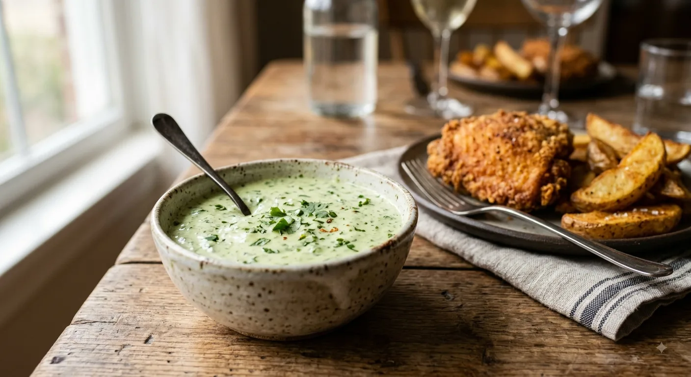
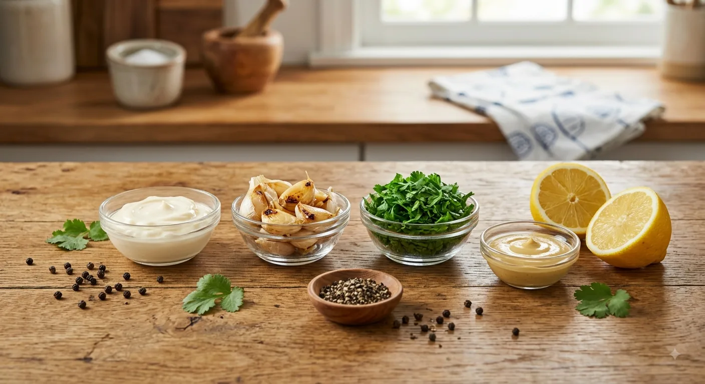
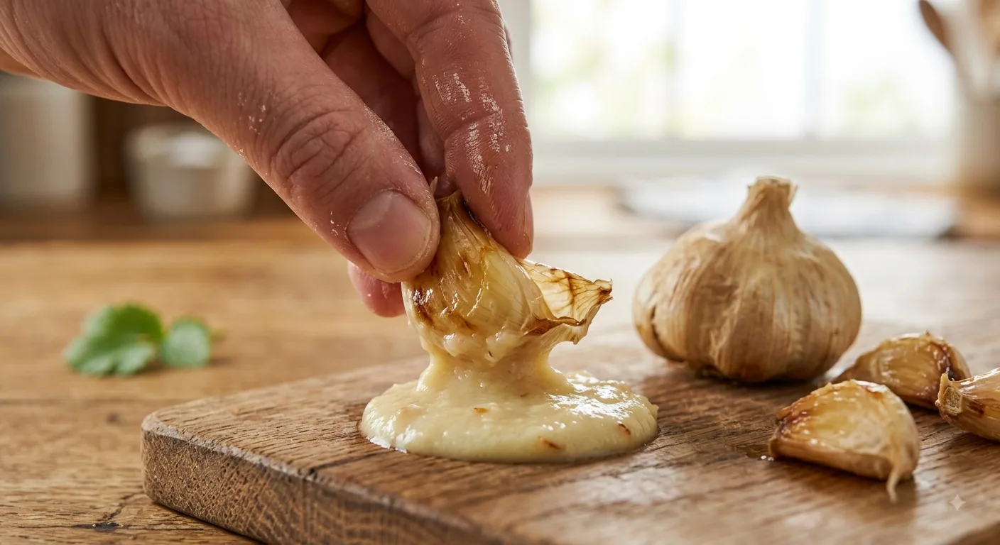
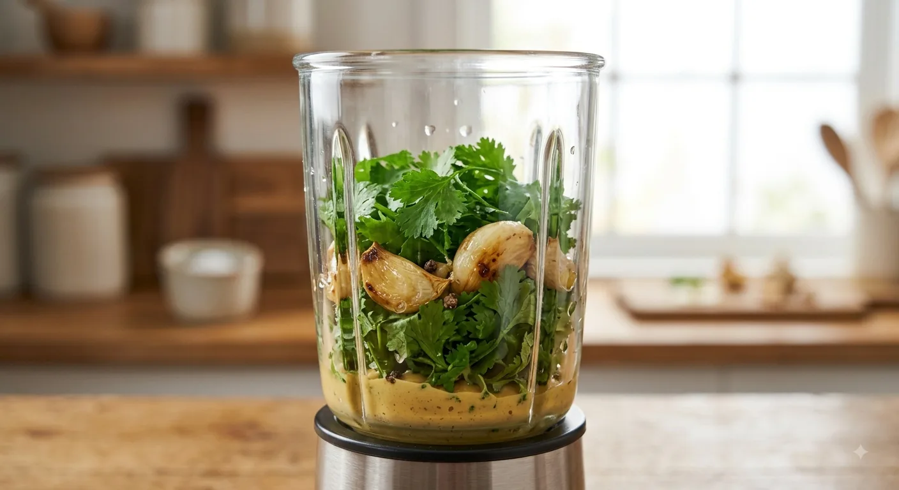
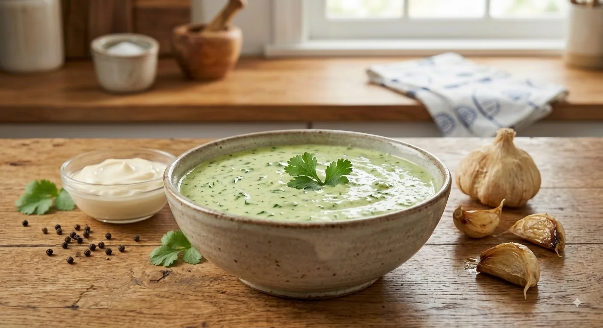
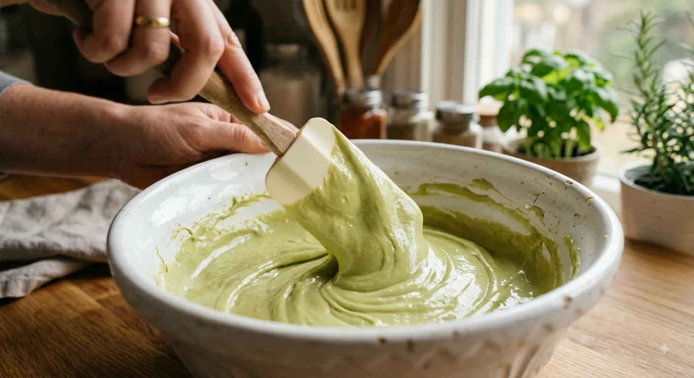

La Guía Definitiva de la Crema Especial de Ajo y Cilantro (Estilo Pollería)
El secreto de esta salsa no es solo mezclar ajo y mayonesa, sino controlar la intensidad del ajo y lograr una emulsión herbácea perfecta que potencie el sabor del pollo sin opacarlo[cite: 233].

📝 Ingredientes Detallados

Base de la Emulsión
- 1 taza de mayonesa de alta calidad (si es casera, mucho mejor, servirá como el cuerpo cremoso de la salsa)[cite: 235].
- 2 cucharadas de yogur natural sin azúcar (aporta ligereza y un toque de acidez que corta la grasa de la mayonesa)[cite: 236].
Saborizantes Aromáticos
- 3 dientes de ajo grandes, confitados o asados (usar ajo cocido en lugar de crudo aporta un dulzor profundo y evita que la salsa repita o sea muy agresiva)[cite: 237].
- 1 taza de hojas de cilantro fresco (bien lavadas y secas, sin tallos gruesos para evitar amargor)[cite: 238].
- 1 cucharada de mostaza Dijon o tradicional (actúa como puente de sabor)[cite: 239].
- 1 cucharadita de jugo de limón recién exprimido o vinagre blanco[cite: 240].
- 1/2 cucharadita de orégano seco[cite: 240].
- Sal y pimienta negra recién molida al gusto[cite: 241].
- (Opcional): 1 trocito de ají verde, jalapeño o locoto sin semillas, si deseas un ligero toque picante[cite: 241].
🍳 Paso a Paso con Descripciones Detalladas
Paso 1: Preparación del Ajo (El Secreto del Sabor)
Si no tienes ajo asado, envuelve los dientes de ajo enteros (con piel) en un trozo de papel aluminio con unas gotas de aceite[cite: 242]. Tuéstalos en una sartén o en el horno hasta que estén tiernos como puré[cite: 243]. Pélalos[cite: 243]. Esto elimina el picor crudo del ajo y deja un sabor dulce y ahumado espectacular[cite: 244].

Paso 2: Procesado de los Aromáticos
En el vaso de una licuadora o procesador de alimentos, coloca el puré de los ajos asados, las hojas de cilantro fresco, la mostaza, el jugo de limón, el orégano, la sal y la pimienta[cite: 246].

Paso 3: La Emulsión Suave
Agrega solo un cuarto (1/4) de la mayonesa y las dos cucharadas de yogur al procesador[cite: 248]. Licúa a velocidad media-alta hasta que el cilantro se triture por completo y obtengas una pasta verde vibrante y lisa[cite: 248].
¿Por qué no toda la mayonesa? Si licúas toda la mayonesa a alta velocidad por mucho tiempo, el calor de las cuchillas puede cortarla y volverla líquida[cite: 249].

Paso 4: Mezcla Final y Reposo
Vierte esta mezcla verde en un bol[cite: 250]. Incorpora el resto de la mayonesa (3/4 restantes) y mezcla suavemente con una cuchara o espátula de goma haciendo movimientos envolventes[cite: 251]. Prueba y ajusta la sal si es necesario[cite: 252]. Cubre con papel film y refrigera por al menos 30 minutos antes de servir para que los sabores se asienten[cite: 252].

💡 Los Truquitos Secretos del Chef
- Secado Extremo del Cilantro: Si el cilantro tiene agua del lavado al momento de licuar, la salsa quedará aguada y perderá vida rápido[cite: 253]. Usa papel toalla para asegurarte de que las hojas estén 100% secas[cite: 254].
- El Yogur es la Clave: En las pollerías, para que la crema no empalague al combinarla con el pollo frito, siempre se "aligera" la mayonesa con un lácteo ácido[cite: 255]. El yogur natural es el secreto mejor guardado para lograr esa frescura[cite: 256].
- El Reposo Obligatorio: Las salsas frías a base de ajo y hierbas necesitan tiempo para que los aceites esenciales perfumen la grasa de la mayonesa[cite: 257]. Una salsa hecha y comida al instante sabrá plana [cite: 258]; una reposada 2 horas sabrá a gloria[cite: 259].